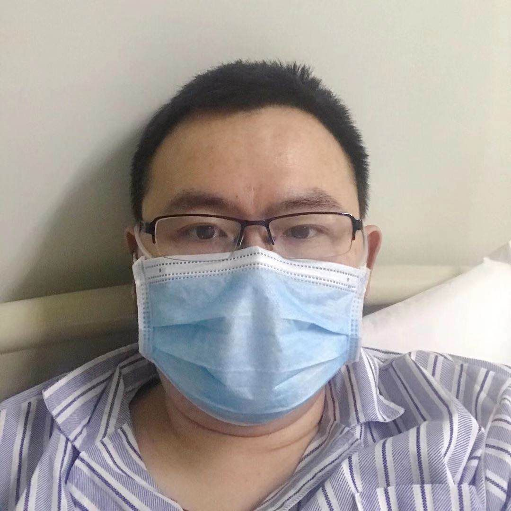
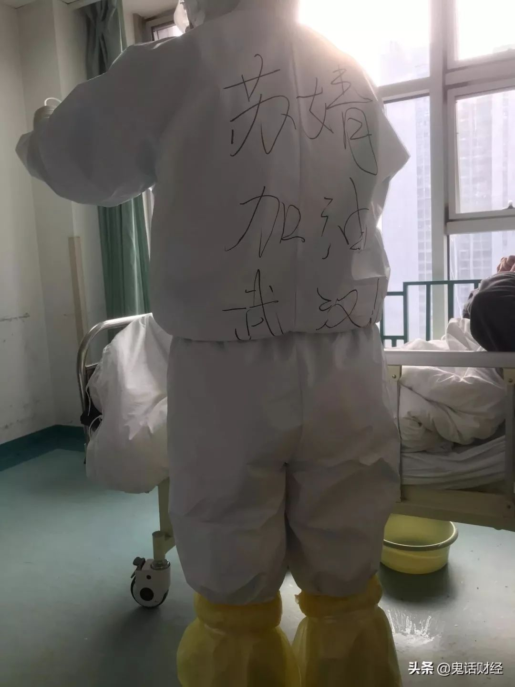

猜疑、隔离和信息泄露，武汉返乡大学生的艰难假期
原文链接 备份链接 原创 钟玄雅 真实故事计划 真实故事计划 4天前 武汉是世界上大学生最多的城市之一。新型冠状病毒肺炎疫情爆发后，一百余万大学生返乡，成为各地防止传染的重点防控隔离对象，遭遇着忧虑、歧视和隐私泄露。疫情给这群新鲜人上了社 …

我是一个写财经文章的，本来传染病这种事情和我八杆子也打不着，可事情就是这么魔幻，一不小心成了火神山医院的“网红患者”。等我出去，我会向大家展示，我的家乡武汉有多美。
口述 | 万先生
整理 | 黄 祺
2月4日早上10点多，我上了救护车，真快，高架上基本上都是120公里的速度，一路飞驰到了火神山医院。
下车的时候，医院给每个人配了轮椅，可是我没有要，我要自己走！

2月4日上午9时许，转运首批患者的车辆抵达火神山医院 摄影 | 鲜敢
一步一步沿着长长的过道走过去，我看见上方飞着的无人机，一路跟着我，我向它打招呼。屋顶上一大群摄影记者，我也给他们挥手示意，可能他们没有遇到这么精神的患者，也很兴奋，向我挥手。我没想到这是直播，我的朋友在电视上都看见我一边挥手、一边挥舞拳头走进病房，他们都说，你太给力了。
咱可是条汉子，关键时刻，不能孬！

万先生
进了病房，护士马上给我上了监护，并且给我吸氧，说实话，还真舒服。我没忘记先答应网友的事，赶紧把整个房间的设施都拍下来然后发出去了。这下可出大事了！瞬时全国无数人涌入我的头条号和新开的抖音号，无数留言潮水般涌来，我根本来不及看就被刷飞了，太惊人了。
生病以后我一直在发日记和视频，我公开自己的经历不为别的，就是为了让大家多点信心，这个病可以治疗的。这个时候，什么都可以输，信心不能输。
万先生2月5日在火神山医院病房里拍摄的视频

备齐口罩、酒精、手套，还是中招了
我这个人比较敏感，说起这次生病，我仿佛有预感似的。
12月31日湖北最早开始讲发现新型肺炎的新闻，我当时就有预感觉得会变得严重。我跟老婆说我们去外地一段时间吧，她没同意。
那个时候新闻里说的是没有发现人传人，但我已经在自己做防护的准备了。元旦后我立刻购买了各种口罩，还有各种消毒药水和酒精，我甚至还买了五盒专用的医用手套。
应该说我防护已经很严密了，可惜还是中招了。现在想来，可能就是眼睛的粘膜感染，虽然我戴着眼镜。
我是70后，平时身体比较健康，现在回忆，生病前我曾经去过的地方只有三个，武汉市江岸区解放公园路中轻大楼里的写字班（孩子在那里上课），武汉天地皇家芭蕾舞（孩子上课），后来去参加了皇家芭蕾舞在湖北剧院的表演，所有往返都是自驾车或者网约车。
由于形势严峻，从22日开始我们一家就在家自行隔离，全部不出家门，我连出门丢垃圾都是严密防护。

住院前万先生在家中自我隔离
一切都从1月24日发生改变。
24日下午例行给母亲打电话问候，得知老人发烧了，我当时就警觉起来，立刻在家测量，体温37.3度，于是马上进入卧室开始隔离。由于之前已经有所警觉，22日就开始吃提前购买的奥司他韦，每日一粒的预防模式，加上莲花清瘟胶囊也是立即启用开始吃。
24日晚上体温继续升高，达到38.5度，明显控制不住了，我把以前买给小孩的美林拿出来喝了一次，20毫升，半小时后体温开始下降，到12点睡觉前是37.2度。
25日早上醒来，觉得有点热，测量体温是38度，半小时后又下降到37.6度，感觉良好，除了有点咳和发烧外，没有其他不适症状，精神也很好。考虑到咳得有点多了，而且有痰，就加服了阿莫西林。我并非胡乱吃药，也是网上向武汉同济医院医生问诊后，作出在家吃药隔离的决定。
第一次就医，医生叫我回家隔离吃药
26日晚上，体温再次升高到达38.2度，服用退烧药后稍微下降了一点，但在反复发热的情况下，我不能再继续在家里了，为了让家人安心，明知道医院很危险，我也不得不去了。
我按照政府发布的流程：首先联系社区，无人应答，联系社区医院，无人应答，联系发布的区联系电话，占线。
半小时后社区回话：下班了！社区医院也下班了！我简直不敢相信我的耳朵，都什么时候了，怎么会下班？没人值班吗？
好在终于打通了区里公布的咨询电话，告知了定点医院汉口医院的一位主任的电话，经过咨询得知，我可以自己去医院看发热门诊，考虑到发热两天以上，而且咳，建议尽快去。
为了防止交叉感染，考虑再三，我决定走过去，距离大约3.5公里，不算很远，走路不到1小时；二来已经在家多日没有出门的我，也想出去走走。
26日晚上8点40左右，我出门了，戴上9132口罩、眼镜，头上戴了一个一次性的浴帽，脚上鞋子外面套上鞋套，戴好医用手套，全副武装出门去。
路上只有零星几个人，除了来回跑的救护车和少量私家车，整个城市一片寂静。真的难以想象，这就是我生活了40多年的城市，一个1000多万人的大都市，说实话，我的心真的在滴血。虽然平时各种吐槽，可是当危机真的来临的时候，谁不爱自己的故乡呢？

万先生第一次就诊的医院
寒风中走了接近一个小时，进入医院大楼前，看见有人在哭，心中一紧，走进门诊大厅，听见一个婆婆打电话，这里刚刚死了一个。
依照程序，先挂号，再测氧饱和，一般人氧饱和都是93-99，不知道为什么那个机器测我是100。我后面又来了一个女的，走路也走不动，大约30多岁，明显状态不好，氧饱和只有81，护士赶紧叫人来扶进抢救室了，后面又来了一个孕妇，老公和父亲一起来的，氧饱和88，明显不妙，也进去了。
经过前面多天的混乱，政府疏导后医院人不像之前那么多了，排队的大概就是30人不到，等待大约2小时，我老老实实地去诊室门口再排队等候。
医生开了检查单，查血，加做CT。12点整，所有检查结束，等待结果。27日凌晨1点，我先去拿了CT报告，左上肺见少许斑点状模糊影，我心里有数了，这就是肺炎，只不过并不严重。
查血结果就更明确，所有已知病毒全部阴性，除了新型冠状病毒没有检测。跑去医生那里，医生说我是疑似病例，但是现在做不了检测，好在状况也不重，叫回家自己隔离、吃药。
走出医院一段距离后，扔掉浴帽，手套、鞋套、口罩全部换新的，信心满满走回家。进门之前脱下外套和外裤，全部喷洒消毒液后扔掉，里面衣物用消毒水浸泡清洗消毒，乖乖地再次进卧室隔离。
幸运住院，但妈妈和老婆都发烧了
1月27日开始，我就自己隔离在家吃药。除了医院开的西药，我还吃了朋友开的中药。但是体温一阵高一阵低，整个人就像在海浪中一样。我从来不吃鸡，但为了恢复，强忍着恶心吃了几口鸡汤面，但吃啥吐啥，边吃边吐。
到了1月30日，病情一直没有好转。听说协和医院西区开了新病区，有700张床位，我想冒险一试。武汉全市禁行，但在一线生机面前这些都不是事。我拖着病体开了几十公里过去，靠近医院的地方被警察拦住了，我没有通行证，而且发烧，不许过去，无奈之下只好返回。但好消息是回家后发现体温稍微下来一点，只有37.3度，不幸中的大幸。
我回家后，休息了一下午，5点左右听到一个消息，说武汉市中心医院新开了一个病区，我立马赶去，还剩最后一个，医院把我收进去了。
从1月31日开始，我的病情加重。31日迷迷糊糊睡到2点多，突然肺部剧痛，醒过来。
虽然住进医院，但是医生还没有开任何医嘱。在此之前，我除了好好休息保存体力外，也没什么好做的。
前一天晚上老婆给我打电话，说孩子可能也在发烧了，我的心都要碎了。为了孩子为了家人，我必须尽快恢复，我坚决不能倒。
8点半，病房送来了早餐！原本以为只能靠饼干过日子，居然有吃的。一个已经放凉了的菜肉包，一碗稀粥，一个煮鸡蛋，虽然一直想吐，但我只花了几分钟就吞下去了。一来因为我确实很饿，二来我的口鼻在外面暴露的时间越长越危险，三是因为我知道，我必须吃，只有吃才有力气和病毒打仗，家里人还等着我回去，我还要去救她们，我不能倒下。
想到这里，我又不争气地哭了，我这四十多岁老爷们，最近一个多星期，特别容易哭，哭的次数比过去几十年都还要多，丢人……
发烧第7天，医生给我扎了留置针，开始输第一瓶药，据说病人太多，药供应紧张，不能及时到位。
我妈早上5点多出门，走了一个多小时到医院，排队两个小时做上了检查，双肺感染，属于高度疑似病例，目前正在打针，我好难过。可怜老太太70多岁，前年肾脏长了9厘米大的肿瘤做了切除手术，却为了保命不得不自己走几公里看病。
老婆情况也不好，连续多天发烧38度多，我觉得她的肺也感染了，但因为没有人能接走孩子，她只能在家硬扛。我恨不得马上就病好了回家替她，我们家，一个都不能少！
这几天我也经常在思考，我最担心谁。我发现还是我闺女，我是不是有点自私了。闺女9岁多了，从她出生起，我就推掉了所有工作，全心在家里照顾她，第一次喂奶，第一次换尿不湿，第一次洗澡，第一次说话，第一次走路，第一次……太多太多了，我都在身边陪伴。却没想到这次生病到现在，足足8天了，没有见过孩子，哎，我又想哭了，不争气……
挺过最凶险的阶段
1月31日那天我听护士说，医院里第一批救治病人的医生护士，很多都住院了，他们的防护服不够，质量也不够好。挽救我生命的武汉市中心医院的医护人员，这个恩情我永远记得，没齿难忘。为众人抱薪者，不可使其倒毙于风雪……

万先生在武汉市中心住院时拍到的护士背影
住院第三天，我的体温始终保持着上午37.7，下午38.5的样子，喉咙痛的症状明显减轻，但是咳得太厉害了，整个腹肌到胸骨都在痛，会影响吃饭，每吃一口饭，足足要疼上一分多钟，痛到几乎无法呼吸，真是拼尽全力的吃。老天爷，希望这个阶段尽快过去，要不我会疯的。
好消息是老婆这天打电话说不发烧了，体温36.2，再继续保持3天，她就扛过去了。闺女体温正常，没想到我们家最弱的两人，却是恢复最快的。母亲已经到隔离观察点去了。
发烧的第十天，体温保持得非常好，血氧饱和度也很好，一切都在向好的方向发展。不过我清楚地知道，必须要等激素停用后，我还是不发烧，那才是真的过关。
听医生说，我即将被转入火神山医院，中国最好的军医都到了，我出院回家不过就是时间问题。
那天让我觉得最开心的事，其实还不是去火神山，而是帮助武汉市中心医院因为救治病患而感染的医护人员申请了救助金。他们用命在救人，无论什么样的奖励，我觉得都不过分，他们很多都非常年轻，有的甚至20岁刚出头，其实还是个孩子。
能力有限，但是我想，最起码，要让他们下班了有口热饭吃，再也不想他们吃泡面了。
听到李医生去世的消息，我很难过，之前住院的医院就是他工作的地方。好在国家监委去调查了，虽然知道为时已晚，但是亡羊补牢，李医生会听见的。
有个事情，我觉得想说一下，对不对请大家思考。李医生被警察训诫，这个不假，但是警察不是专业人士，特别是作为派出所的民警，不过是执行他们的任务，就不要骂警察了。
特别是我这种有孩子的人，从来都是教育孩子，有困难找警察叔叔，警察和医生是两个崇高的职业，对于孩子来说，都是安全的保证。我想，这个道理需要讲清。我没有单纯的为任何人说话，我只是希望分清责任，不要见人就喷。
争取从火神山医院第一批出院
到火神山医院的第四天，我的状态越来越好了，连护士看到我都说，你比刚来的时候好多了。哎，亏我还以为自己来的时候不喘，现在看看前几天的视频，简直不敢想象。
到火神山医院后我拍了视频发在网上，引得很多记者来采访我。火神山医院条件真的不错，两人一间，有空调，拖鞋都是新的。和我一间的是位老人，老人家情况严重一些。
我写文章、拍视频不是为别的，我的目的很简单，就是告诉大家，这个病真的可以治疗，我想给所有人信心。
我以前参与很多财经节目录制，所以拍视频我很习惯。不过后来医生们说我拍视频让他们有压力，我答应不拍了，你看到的都是之前拍的。我答应了医生，不能食言。
我现在最大的希望，是成为火神山医院第一批出院的痊愈病人，我想让大家看到病毒很凶猛，但是不必惊慌。大家不要恐慌，没事的。
我是一个写财经文章的，本来传染病这种事情和我八杆子也打不着，可事情就是这么魔幻。

武汉东湖樱花园 图｜网络
等我出去，我会向大家展示，我的家乡武汉有多美。

征集令
《新民周刊》现面向全国征集新冠肺炎采访对象和真实故事：
如果你是参与抗击新冠肺炎疫情的医护人员或其家属，我们希望聆听你的“战疫”故事，也希望传达你的诉求。
如果你是确诊、疑似患者本人或家属，我们希望了解你和家人如何“抗疫”的过程，让外界了解你的真实经历。
如果你是疫情严重地区的普通市民，我们希望展现你的乐观，并倾听你所需的帮助。
如果你是公共服务人员或各类捐助者，我们希望看到你的“最美逆行”，记录下你的无私。
……
抗击新冠肺炎疫情，我们诚征对疫情了解的社会各界人士，提供相关线索，说出你的故事，让我们用新闻留存这一切。
《新民周刊》新冠肺炎线索征集值班编辑联系方式（添加时请简要自我介绍）：
周一：应 琛 微信号：paulineying0127
周二：金 姬 微信号：gepetta
周三：黄 祺 微信号：shenwen-2020
周四：周 洁 微信号：asyouasyou
周五：孔冰欣 微信号：kbx875055141
周六：吴 雪 微信号：shyshine1105
周日：姜浩峰 微信号：jianggeladandong
新闻是历史的底稿，你们是历史的见证者。期待你的故事、你的线索！

▼
大家还都在看这些
▼
转载请在评论区留言，获得授权！
转载时，须注明作者、出处和微信号


原文链接 备份链接 原创 钟玄雅 真实故事计划 真实故事计划 4天前 武汉是世界上大学生最多的城市之一。新型冠状病毒肺炎疫情爆发后，一百余万大学生返乡，成为各地防止传染的重点防控隔离对象，遭遇着忧虑、歧视和隐私泄露。疫情给这群新鲜人上了社 …
原文链接 备份链接 杨晨还在等通知。他在等待“十号令”带给他以及他的家庭命运的转机，他是一位“武汉病人”的家属。 让他有所期许的“十号令”，是2月2日发出的。按照“十号令”的要求，自通告发布之日起，对全市经发热门诊诊断有肺炎症状的发热病人 …
原文链接 备份链接 大家好，我是田静。 疫情爆发最严重的那几天，我家的亲戚被隔离了。 听到消息后家里人都吓得不轻。原来是亲戚小龙春节前去过武汉一晚，回来后就发烧、胸闷、呼吸困难，在老家农村，只能监管，不能诊治。 每天在家隔离，实时向当地村 …
原文链接 备份链接 2月9日，武汉市洪山体育馆“方舱医院”西区，在这里，一位医护人员负责近20名病患。中青报·中青网见习记者 鲁冲/摄 一组肺部CT扫描影像出现在医生的电脑屏幕上，杨艳只看了一眼，就几乎确定：“我感染了。” 这个42岁的 …
原文链接 备份链接 1月21日下午，我们三人就住进了武汉金银潭的一家酒店，然后迅速开始了解情况。两位记者去华南海鲜市场摸情况，我一边做北京朝阳医院陶勇医生被伤事件的电话采访、赶微信稿，一边询问武汉的医生朋友。我们三人在酒店房间第一次碰面 …